I captured every X post you sent (30 of 30, stills plus motion frames), measured them, and pulled out what each one demonstrates. Below: each idea applied to a real Solen surface with your tokens. Because I might grasp the wrong part of a reference, every probe names the possible "parts you liked" as options. Mockup copy is in English per the review convention; shipped UI stays localized.
How to answer: reply in one line, like "P1 a, P2 b, P3 no, P5 b, C1 keep, C5 staging". "no" kills a probe. Anything you skip stays undecided, nothing ships from this page without your pick.
Theme 1: state changes that morph instead of cut
The strongest recurring signal across your refs: numbers roll, icons cross-fade, buttons collapse into their result. Our motion vocabulary has press, collapse and burst, but no state-transition morphs yet. All demos below loop automatically.
P1
Rolling digits when a number updates
refs 17 + 25
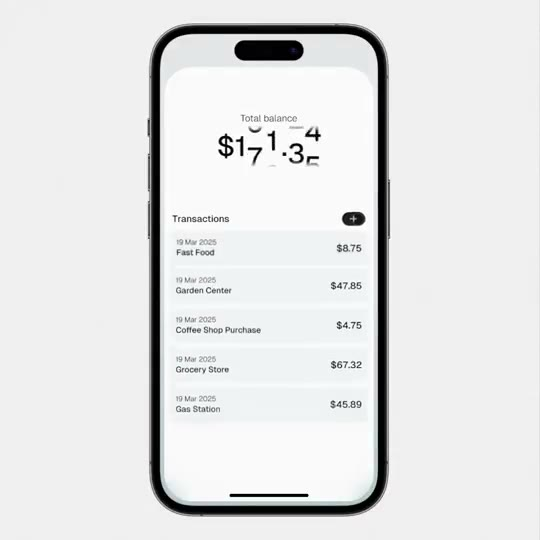
The balance rolls digit-by-digit with a soft blur instead of snapping.
Applied to a dashboard KPI: when revenue or booking count updates, the changed digit rolls with a blur instead of hard-swapping.
Live demo (loops)
Revenue this week
CHF 2'4780
a yes, for live-updating dashboard numbersb yes, and also checkout totals when a voucher appliesno numbers should just update instantly
P2
Icon morphs into its confirmation
refs 16 + 29
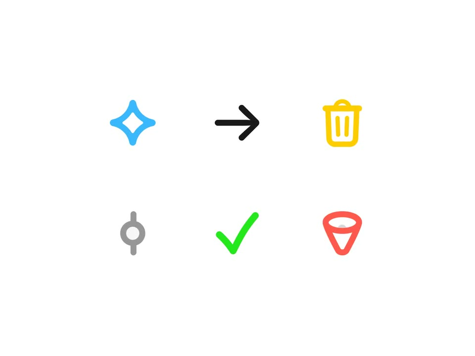
Icons transform between states (blur + scale cross-fade), never a hard swap.
Applied to the copy-booking-code button: copy icon cross-fades to a green check on success, then back. Same recipe would fit the filter chip when a filter becomes active.
Live demo (loops)
a yes, for copy / save / apply-filter icon buttonsno keep instant swaps
P3
Approve or decline collapses into the result, with undo
rejected 2026-07-16ref 18
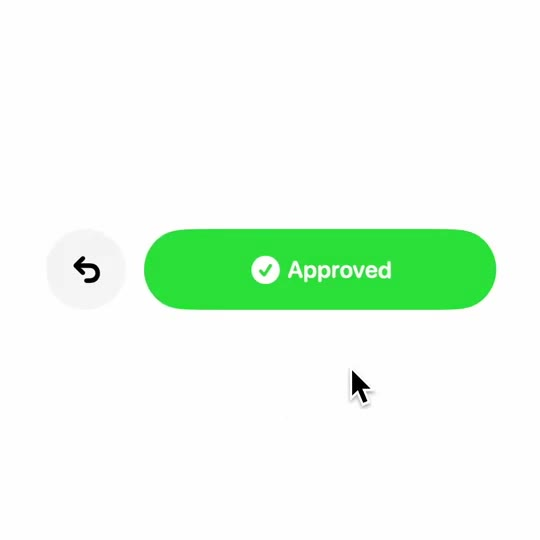
The chosen option expands to a full-width committed pill; a small undo appears.
Applied to the owner dashboard booking request (Sat 18 July, 14:30, haircut): tapping Confirm collapses both buttons into one full green pill plus a short undo window.
Live demo (loops)
DeclineConfirmed
a yes, with the undo windowb collapse yes, undo not neededno keep two static buttons
P4
Lists populate with a soft cascade
refs 17 + 22
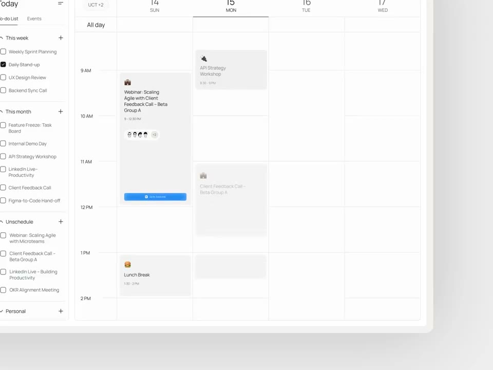
The calendar fills ghost-first, then rows resolve one after another.
Applied to booking lists after the skeleton: rows fade-and-rise in a quick stagger instead of appearing all at once. Skeleton stays the loading state; this is only the hand-off moment.
Live demo (loops)
HaircutSat 18 July
Beard trimTue 21 July
ColoringFri 24 July
a yes, subtle stagger after loadingno everything appears at once
Theme 2: progress you can count
Three of your refs independently show progress as discrete, countable marks instead of a smooth fill. That matches the house's precise, restrained direction, so these are strong candidates.
P5
Segmented tick-bar instead of a smooth fill
ref 26
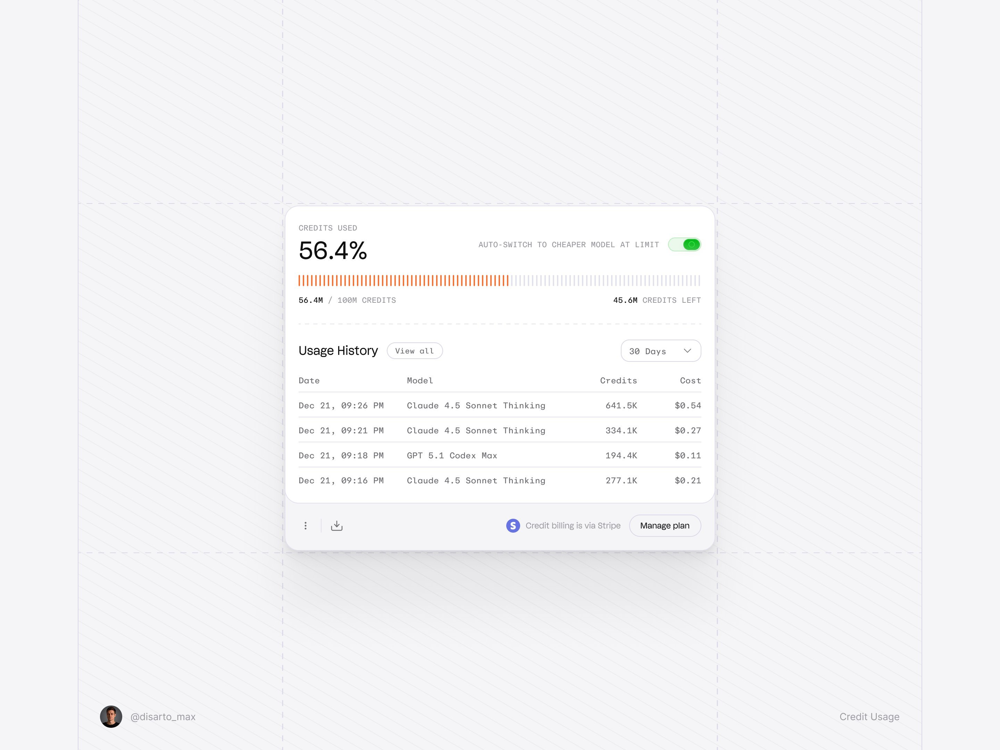
Usage shown as discrete ticks fading from filled to empty.
Applied to the Solen Status loyalty meter (6 visits to Gold): left is today's smooth bar, right the tick version. Ticks make "how many left" countable at a glance.
A: smooth (today) vs B: ticks
4 of 6 visits
4 of 6 visits
a keep smoothb switch to ticks where units are countable (visits, setup steps)c ticks everywhere, also percent-type progress
P6
A marker riding the progress bar at the live value
ref 03
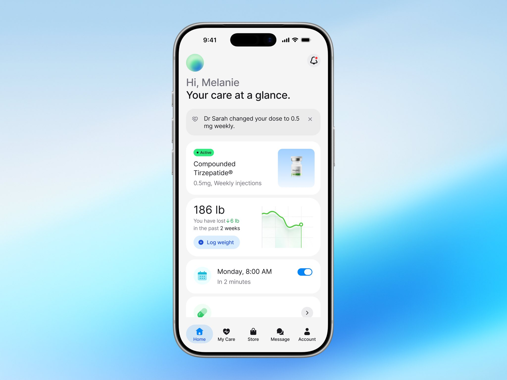
A pill flag floats on the bar exactly at the current value.
Applied to the same loyalty meter: the current standing rides the bar as a small ink flag instead of a static label at the end.
Demo
Gold in 2
a yes, marker on the barno label stays beside the bar
P7
One checklist language: done, current, upcoming
refs 26 + 13 + 06
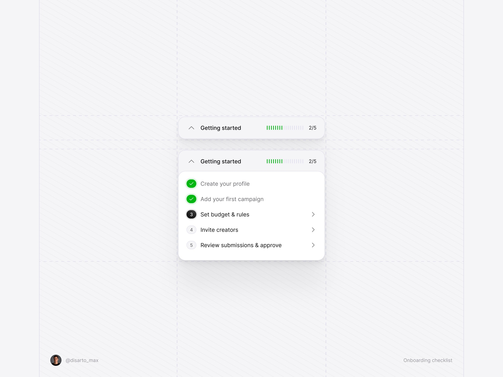
Green check = done, filled = current, outline = future; future steps visible up front.
Applied to the salon setup banner (today it says "Setup: 4/7" without showing the steps): expanding reveals the whole plan, current step bold, future steps pre-listed in grey.
Demo
Add opening hours
5Invite your team
6Upload photos
7Connect payouts
a yes, this becomes the canonical checklist recipeb yes, but only in the dashboard, not customer flowsno
P8
Countdown ring around the control itself
ref 19
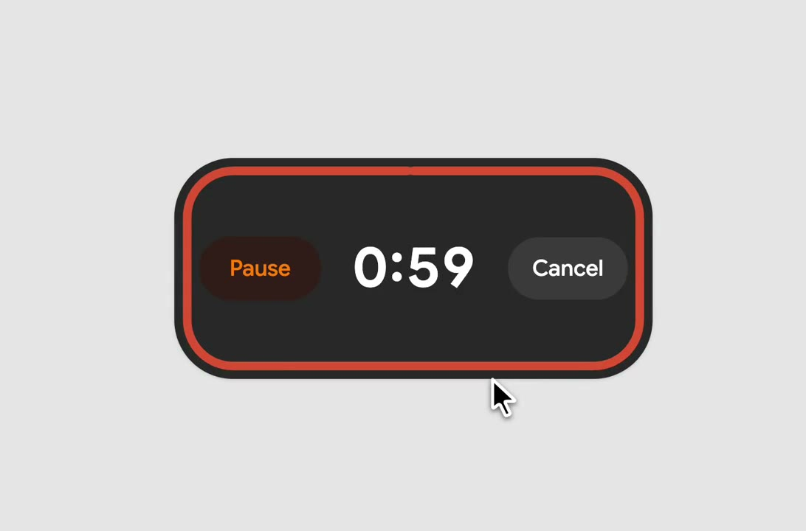
The timer traces its remaining time as a ring around its own capsule.
Applied to the walk-in queue tracker: your queue position in an ink capsule, the refresh window traced as a ring. Only real data, no invented wait times.
Live demo (loops)
No. 4
ahead of you: 3
a yes, for the queue trackerb also for a reserved-slot hold at checkout, if we ever show oneno
Theme 3: copy carrying the weight
P9
The commit button carries the exact amount
ref 02
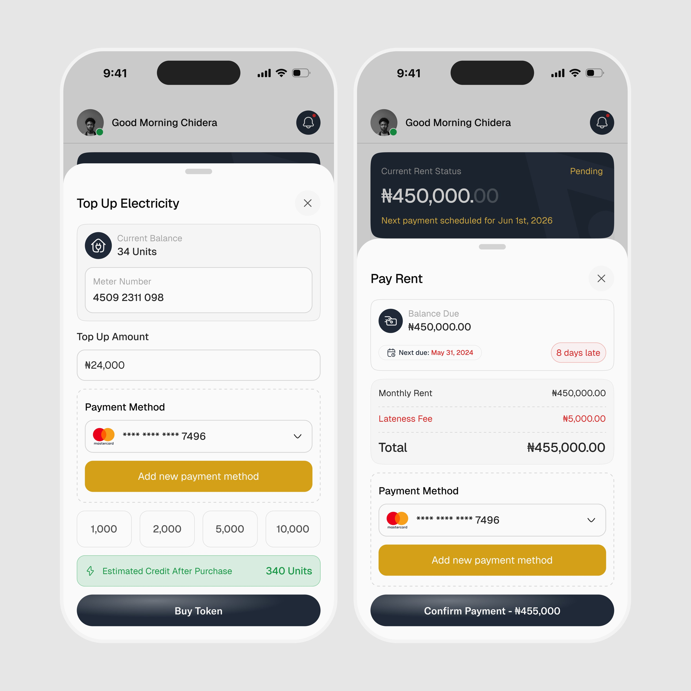
Itemized lines above, and the CTA label folds in the exact total.
Applied to the booking payment step: line items with the total bold, and the ink CTA reads the amount itself, so the price is not repeated twice on screen.
Demo
Haircut, 45 minCHF 65
Voucher SUMMER- CHF 10
TotalCHF 55
Pay CHF 55
a yes, amount in the CTA labelb keep price separate, CTA stays a plain verb
P10
Notices as flowing text with bold spans, not a bordered card
ref 05
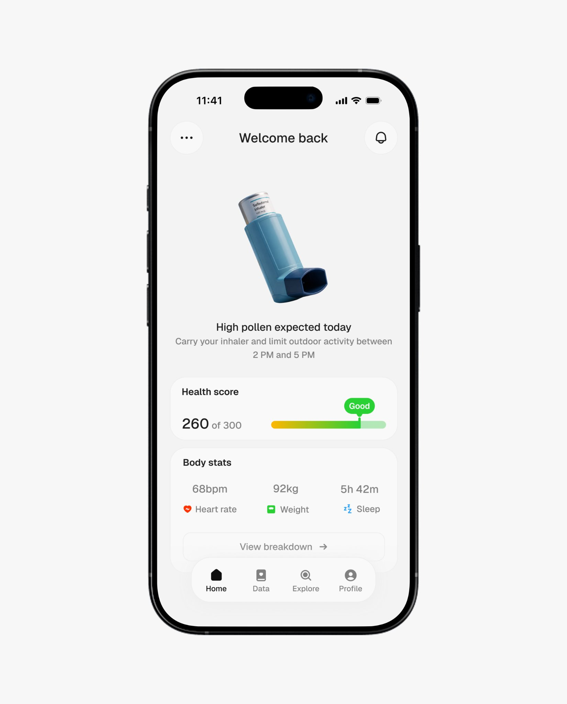
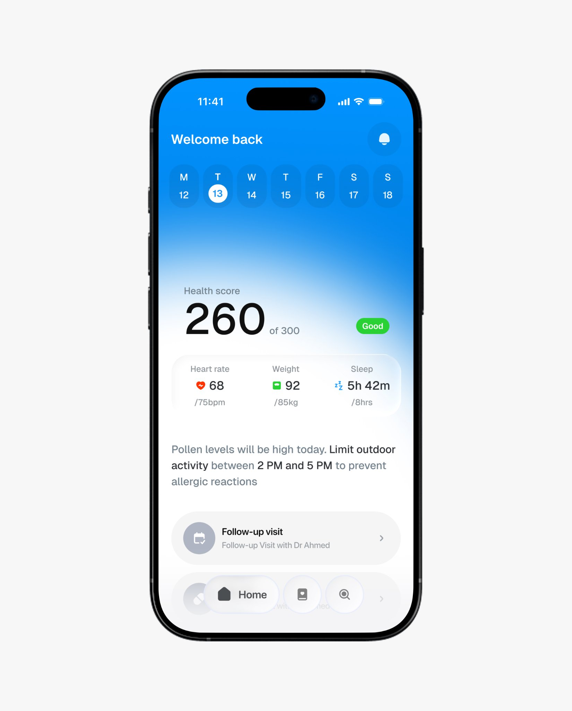
Two iterations of one screen; the tip is delivered as a sentence with inline bold keywords.
Applied to reminders and salon notes: A is today's boxed info card, B is plain copy with bold key phrases.
A: boxed vs B: inline
Your appointment is tomorrow at 14:30. Please arrive 10 minutes early.
Your appointment is tomorrow at 14:30. Please arrive 10 minutes early.
a keep boxed cardsb inline bold for one-sentence notices, boxes only for warnings
Theme 4: structures your refs suggest for surfaces we have or plan
P11
7-day chip row for recurring hours
ref 13
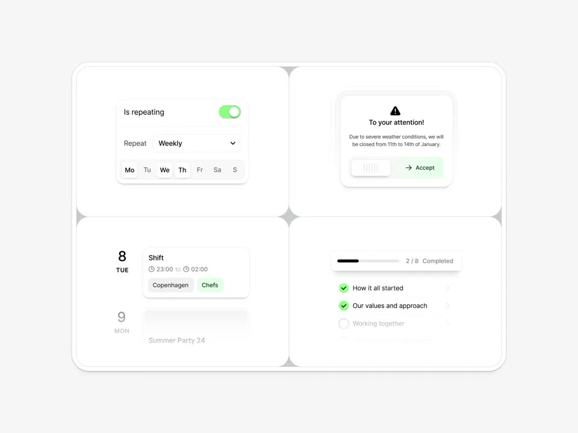
Weekly recurrence picked via a 7-chip day row.
Applied to staff working hours in the dashboard (no such component exists today). Selected days use our gray-fill selected state, not the ref's dark fill (that conflict is C3 below).
Demo
MonTueWedThuFriSatSun
a yes, build it like this when working-hours UI comes upno
P12
Notifications expand in place as a small stack
ref 20
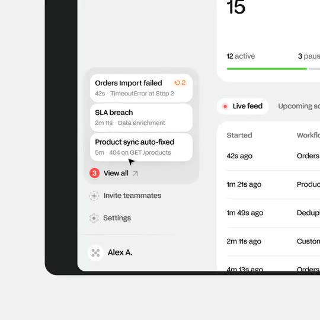
A count row fans open into a card stack; the label folds into "View all".
Applied to the dashboard bell: instead of navigating away, the count expands a compact stack in place, and the row label becomes "View all".
Demo (expanded state)
New booking
Haircut, Sat 18 July
Payment received
CHF 65, yesterday
View all
a yes, in-place stackb keep a full notifications page only
Applied to the dashboard: a "Tips for your salon" panel where every tip is the same card shape. Honest flag: no backend for this exists today, this probe only settles the shape; it ships nothing until a real, wired insight source is built.
Demo (shape only)
Friday is your strongest day
Open more slots on Friday afternoons.
a yes, one InsightCard shape for all tipsno no tips panel
P15
Waits that say what they are doing
ref 24 + research
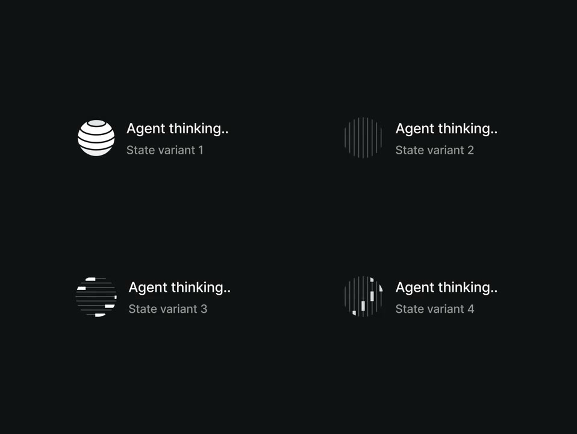
Wait states as one quiet animated glyph plus a two-line label.
Applied to availability checks: waits longer than a second name the step ("Checking availability") instead of a bare skeleton. Research backs this: naming the work makes waits accepted (the labor-illusion studies).
Demo
Checking availability
Sat 18 July, 2 appointments
a yes, name the step on waits over ~1sno skeletons everywhere, no text
P16
The next appointment gets a hero treatment
ref 04
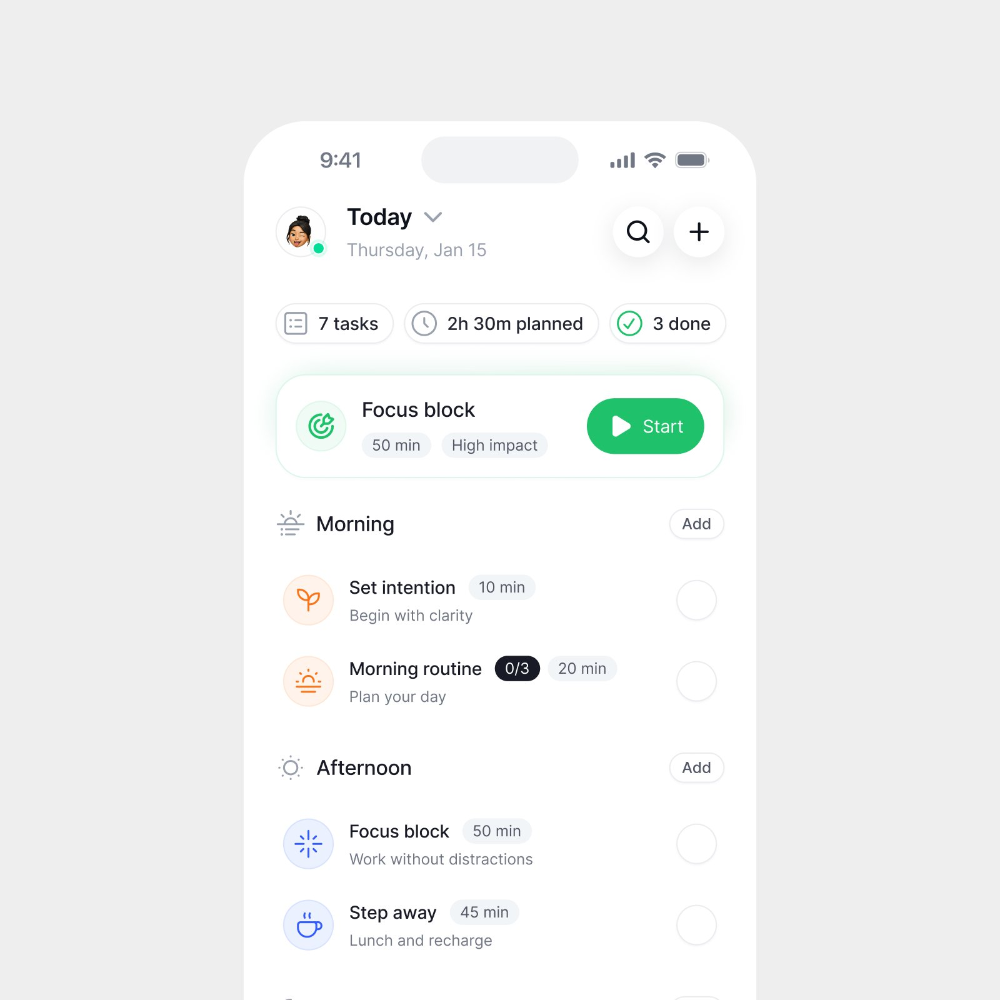
One featured "next up" row is visibly elevated above the plain rows.
Applied to the customer appointments list: the upcoming appointment gets an ink border + shadow + inline action (the existing maps-link pattern); past ones stay plain. Restrained version of the ref's glow.
Demo
Haircut, Barbershop Central
Sat 18 July, 14:30
Directions
Beard trim
3 weeks ago
a yes, featured next-appointment rowno all rows equal
P17
Long-running actions minimize to a pill
ref 06
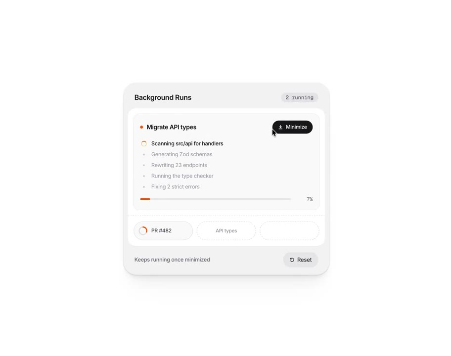
A background job shows its whole plan, current step live, and can minimize without cancelling.
Applied to dashboard bulk actions (export, calendar sync): the job lists all steps up front (current bold, future grey, same language as P7) and can collapse to a small pill while you keep working. Shape-only probe; adopted per-feature as those jobs get built.
a yes, adopt for long-running dashboard actionsno a simple blocking spinner is fine
Theme 5: where your refs collide with your own locked rules
These I will not build silently. Each names the locked rule and the refs pulling against it. Default answer is "keep": the lock stays law until you reopen it by name.
C1Color per category vs your neutral-tags lock
Refs 04, 22 and 23 color-code by category or time of day (pastel badges, colored calendar events). Your locked rule says category tags are neutral, no per-category color. Liking these refs might mean you want per-category color back, or it might just be what those designers do. keep or reopen?
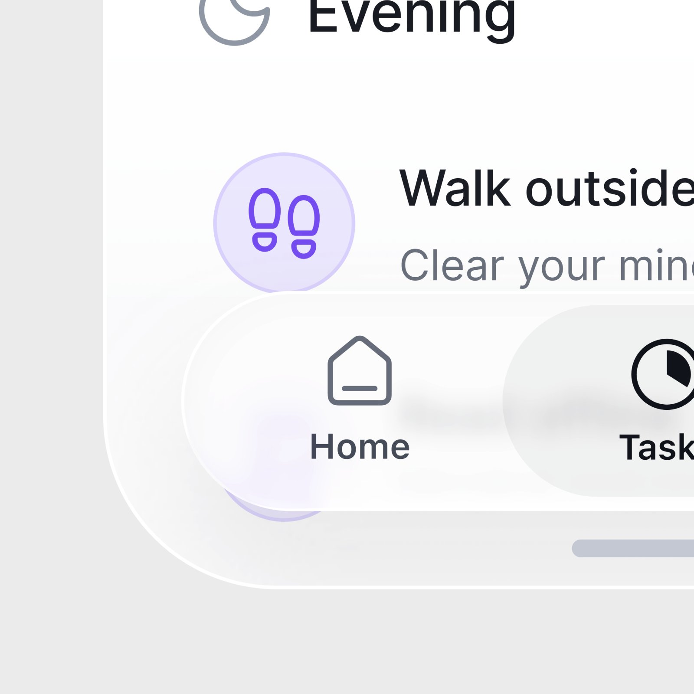
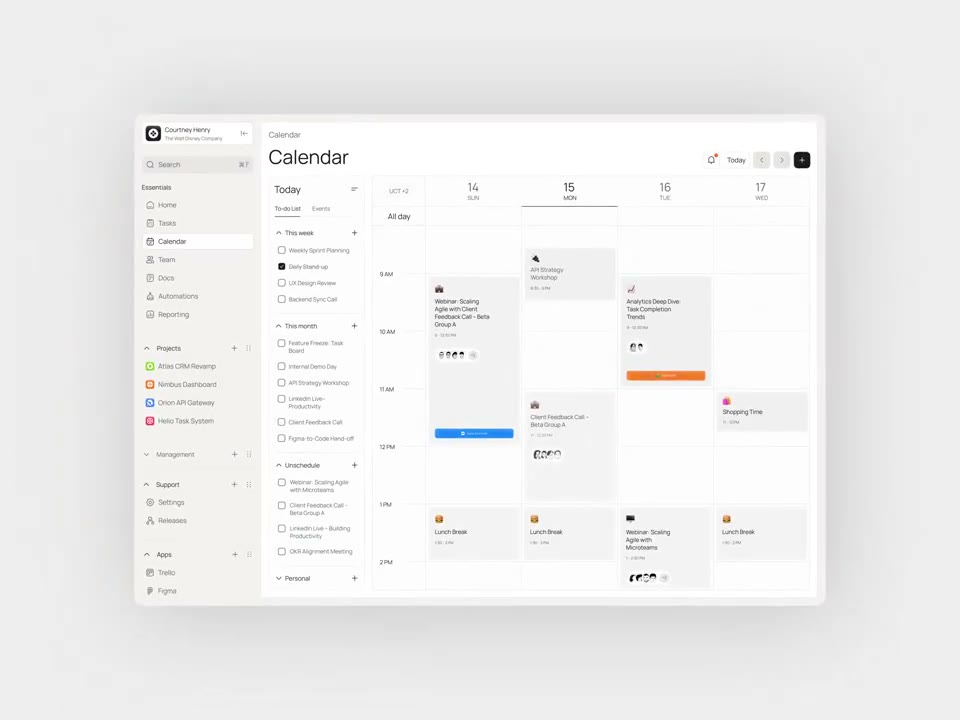
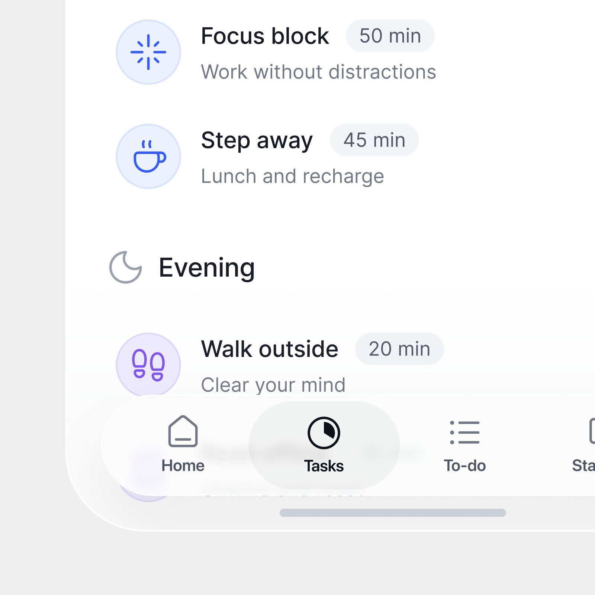
C2Colored primary buttons vs your ink-commit lock
Ref 14 commits with a blue pill, ref 23 with a green circle. Your locked rule: the one primary commit button stays ink, blue is only for small clickable bits. keep or reopen?
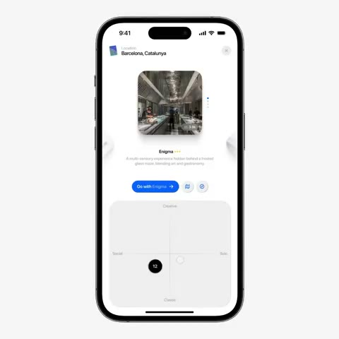
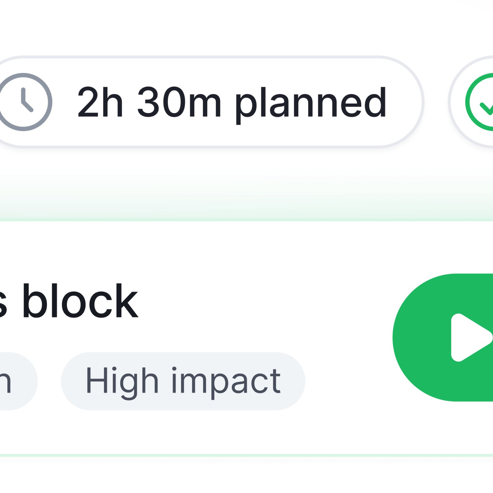
C3Selected states vs your gray-fill lock
Ref 08 marks selection with a white pill and a dark ring, ref 13 with a dark fill, ref 09 with a grey capsule. Your locked selected state is the calm gray sunken fill with semibold ink text, and it explicitly rules out dark fills. Three refs pulling three different ways suggests this axis keeps attracting you; if the gray fill ever feels wrong, say so and we probe it properly instead of drifting. keep or probe it?
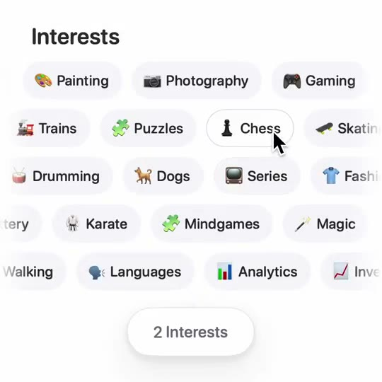
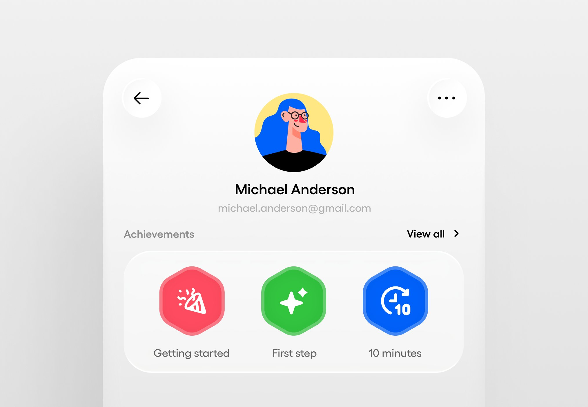
C4Full-bleed color heroes vs your 80/17 restraint
Ref 05's second iteration fills the top of the screen with saturated blue and renders the score directly on it. That is the opposite of your 80/17 neutral-surfaces budget. If you like it, the honest scope would be a one-off celebratory surface (a confirmation, an onboarding end), never daily screens. keep restraint or scope one exception?
C5The big question: staging taste or product taste?
Seven of your refs (01, 03, 05, 07, 21, 27, 30) share one trait that has nothing to do with their UI ideas: colorful ambient backdrops behind white UI (wallpapers, gradients, blurred photos). Two readings: staging = you like how designers PRESENT work, and we should adopt it for our own mockup and case-study pages; product = you want more color in Solen itself, which would be a big, deliberate break from the black-and-white pivot. Which is it? Answer "C5 staging", "C5 product" or "C5 both".
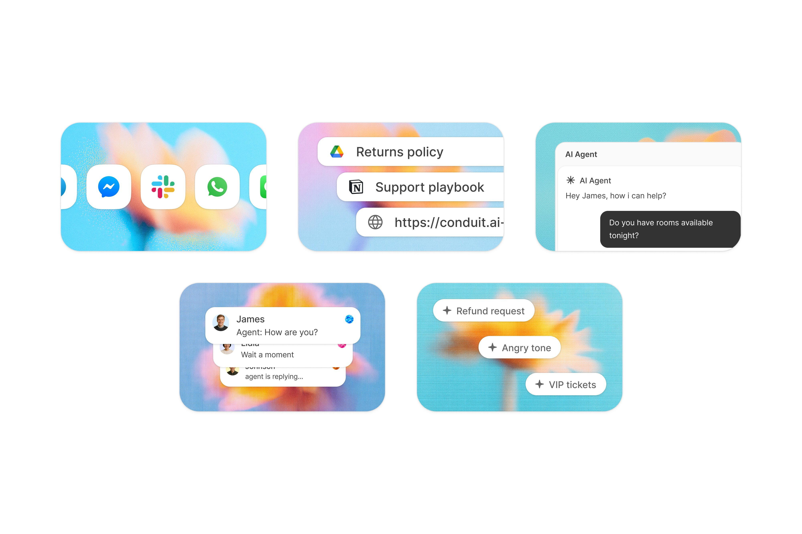
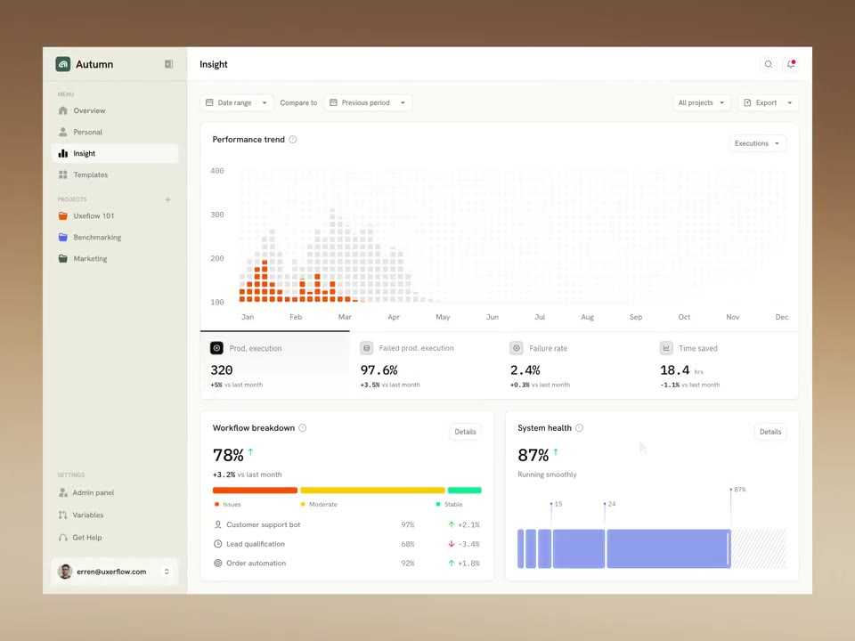
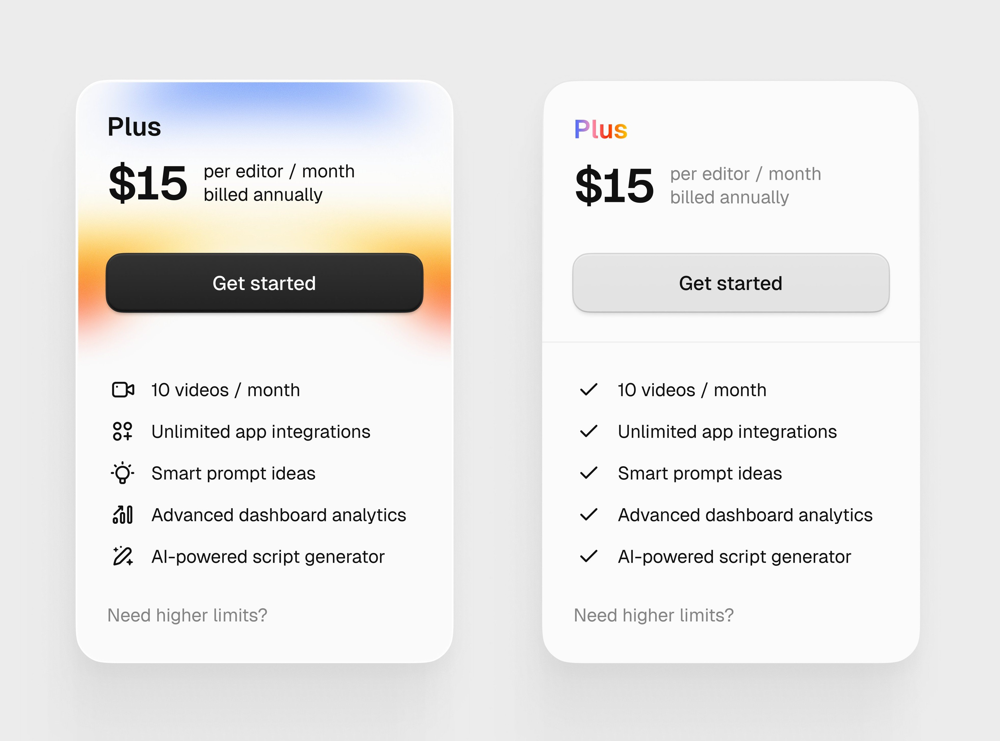
Already law: what your refs simply confirm
Cool sunken grey as the base surface: refs 17, 20, 22 and 26 sample within a hair of your #F4F4F5 token. The 80/17 base is exactly what these designers use.
Tabular numerals for data (ref 26 uses mono for every number): your Inter Tight tabular lock, worth extending from codes to KPI numbers and timestamps.
Pastel chip + saturated icon for status (ref 18's idle pills): your locked inline-status recipe.
The CTA stating its result ("Contribute 1.5%", ref 15): your commit buttons already do this.
Real product UI inside marketing tiles (refs 28, 30): noted for any future landing page, it beats icons and stock art.